Income as a Predictor for Cancer Rates
library(tidyverse)
library(ggridges)
library(readxl)
library(patchwork)
library(plotly)
library(ggtext)
knitr::opts_chunk$set(
fig.width = 6,
fig.asp = .6,
out.width = "90%"
)
theme_set(theme_minimal() + theme(legend.position = "bottom"))
options(
ggplot2.continuous.colour = "viridis",
ggplot2.continuous.fill = "viridis"
)
scale_colour_discrete = scale_colour_viridis_d
scale_fill_discrete = scale_fill_viridis_dMotivation for exploring relationship between Median Household Income and Cancer Incidence/Mortality Rates
Cancer is the second leading cause of death in New York City as approximately 34,956 people living in NYC died from cancer in 2017. Median Income for households in New York City varies widely between and within boroughs. This is also the case for cancer incidence and mortality rates. Since New York City experiences large disparities in income levels within its neighborhoods as well as disparities for cancer rates across the city, it is sensible to determine if median household income plays a role in cancer incidence and mortality rates across the boroughs of New York City.
Analyzing Income Data for New York City
Median Household Income Data for New York City and its boroughs was pulled from an organization called Citizens’ Committee for Children of New York which organized tabular data on median household income between 2005 - 2019, for all neighborhoods and boroughs in New York City and for households with and without children: https://data.cccnewyork.org/data/download#0,8/0,29
income_data =
read_csv("data/median_income_nyc.csv", skip = 5, na = "") %>%
janitor::clean_names() %>%
select(-data_format, -fips) %>%
rename(year = time_frame, median_income = data) %>%
filter(household_type %in% "All Households") %>%
mutate(median_income = as.numeric(median_income))This dataset includes variables listed as location, household_type, year, median_income with a size of 1518, 4. This dataset contains median household income for different types of households, including families with and without children, spanning the years of 2005 - 2019 for approximately all neighborhoods in each of New York City’s five boroughs. The dataset also includes median household income for each borough as an entity and New York City as a whole. For the remaining analysis, we will be using data from the boroughs of Manhattan, Queens, Brooklyn, and the Bronx as well as the respective neighborhoods within each borough. To help streamline analysis, we only looked at households of type “All Households” which includes both families with and without children.
Now we will visualize the income data per borough to get a better idea of any trends.
income_data %>%
filter(location %in% "Manhattan") %>%
ggplot(aes(x = year, y = median_income)) +
geom_point() +
geom_line() +
labs(title = "Median Household Income in Manhattan Per Year")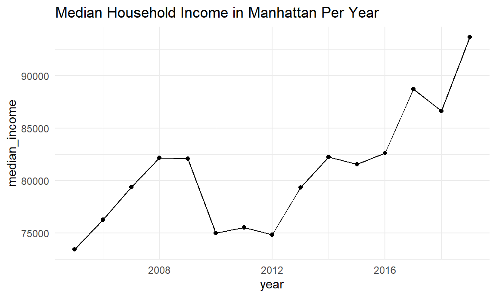
income_data %>%
filter(location %in% "Bronx") %>%
ggplot(aes(x = year, y = median_income)) +
geom_point() +
geom_line() +
labs(title = "Median Household Income in the Bronx Per Year")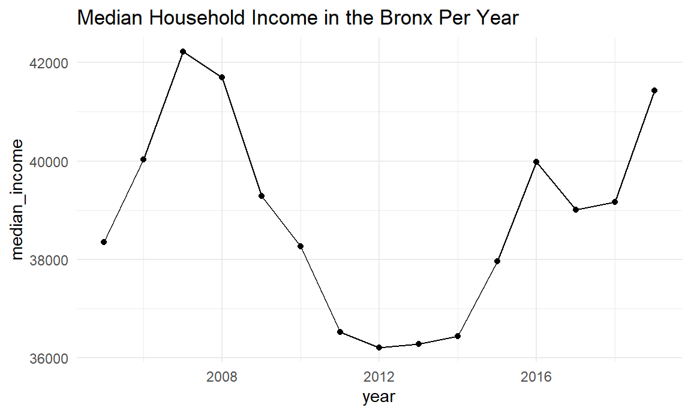
income_data %>%
filter(location %in% "Brooklyn") %>%
ggplot(aes(x = year, y = median_income)) +
geom_point() +
geom_line() +
labs(title = "Median Household Income in Brooklyn Per Year")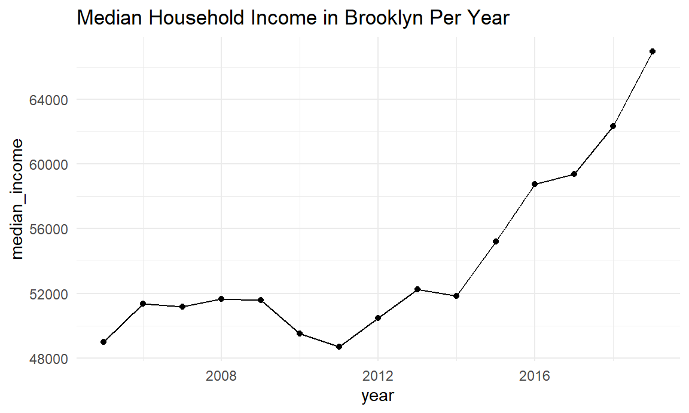
income_data %>%
filter(location %in% "Queens") %>%
ggplot(aes(x = year, y = median_income)) +
geom_point() +
geom_line() +
labs(title = "Median Household Income in Queens Per Year")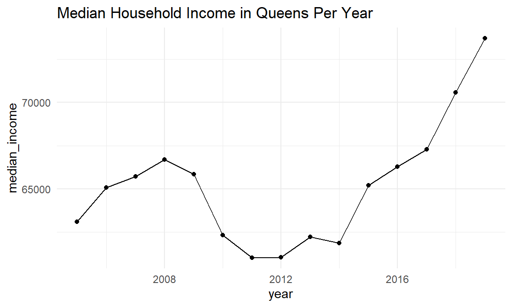
income_data %>%
filter(location %in% c("Manhattan", "Bronx")) %>%
ggplot(aes(x = median_income, fill = location)) +
geom_density() +
labs(title = "Median Household Income Density in the Bronx and Manhattan from 2005 - 2019", x = "Median Household Income") +
facet_wrap(~ location) +
theme(legend.position = "none")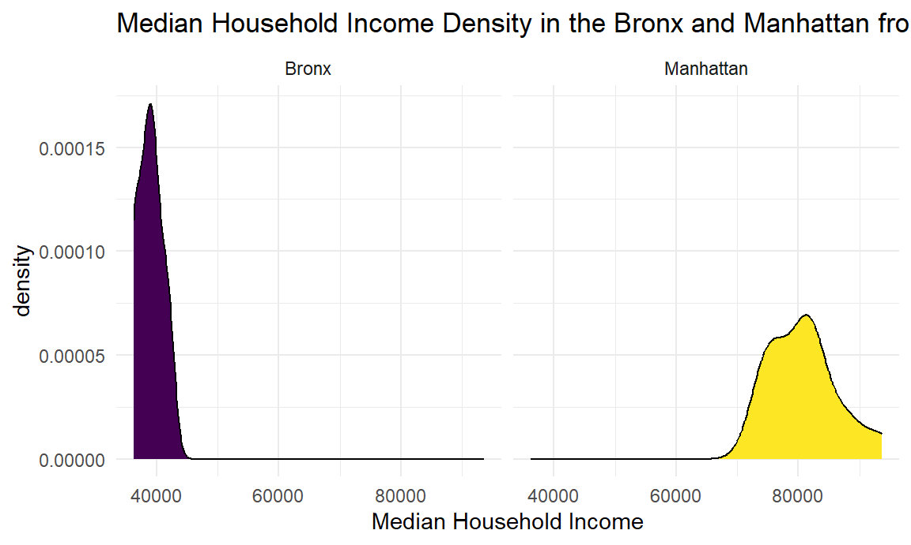
income_data %>%
filter(location %in% c("Manhattan", "Bronx", "Queens", "Brooklyn", year == "2013")) %>%
ggplot(aes(x = median_income, y = reorder(location, median_income), fill = location, group = location)) +
geom_density_ridges() +
labs(title = "Median Household Income Distribution Per Borough in 2013",
x = "Median Household Income",
y = "Borough") +
theme(legend.position = "right")
income_data %>%
filter(location %in% c("Manhattan", "Bronx", "Queens", "Brooklyn")) %>%
ggplot(aes(x = year, y = median_income, fill = reorder(location, median_income))) +
geom_bar(stat = "identity", position = "dodge") +
labs(title = "Median Household Income by Borough per Year", x = "Year", y = "Median Household Income") +
theme(legend.position = "right") +
scale_fill_discrete(name = "Borough")
income_data %>%
filter(location %in% c("Manhattan", "Bronx", "Queens", "Brooklyn")) %>%
group_by(year, location) %>%
summarize(median_income = mean(median_income, na.rm = TRUE)) %>%
ggplot(aes(x = reorder(location, median_income), y = median_income, fill = location)) +
geom_violin() +
labs(title = "Median Household Income Per NYC Borough from 2005 - 2019", x = "Borough", y = "Average Median Income") +
theme(legend.position = "none") 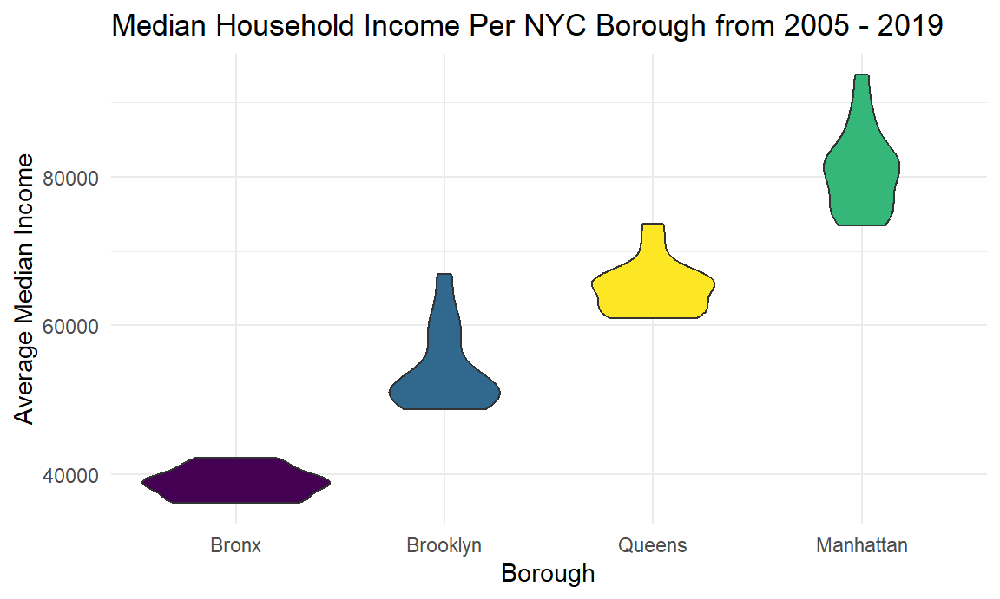
Visualizing Cancer Data for New York City
Now we will be loading and examining cancer incidence and mortality rates in New York City and its boroughs. This dataset was pulled from the New York State Department of Health’s online cancer registry: https://www.health.ny.gov/statistics/cancer/registry/
These datasets include the location within NYC for each cancer data recording from 2005 - 2019, the cancer incidence rate per 100,000 people for all types of cancer for both males and females and the cancer mortality rate per 100,000 people for all types of cancer for both males and females. Ethnicity, race, and age are not included in this dataset, the only identifying information is the person’s sex.
We used datasets containing cancer incidence data per New York City boroughs and neighborhoods from 2015 - 2019, as well as cancer incidence and mortality rates in Queens, Brooklyn, Manhattan, and the Bronx over time from 2005 - 2019 from the following links:
https://www.health.ny.gov/statistics/cancer/registry/vol1n.htm
- Each link on this page to the cancer incidence rate in each neighborhood for each borough was used in the analysis except for Staten Island
https://www.health.ny.gov/statistics/cancer/registry/table2/tb2totalbronx.htm
https://www.health.ny.gov/statistics/cancer/registry/table2/tb2totalkings.htm
https://www.health.ny.gov/statistics/cancer/registry/table2/tb2totalnewyork.htm
https://www.health.ny.gov/statistics/cancer/registry/table2/tb2totalqueens.htm
We will now load the datasets for cancer incidence and mortality rates per borough.
cancer_data_bronx = read_excel("data/nyc_cancer_data.xlsx", sheet = "Bronx", skip = 2) %>%
janitor::clean_names() %>%
select(x1, rate_per_100_000_population_3, rate_per_100_000_population_12) %>%
rename(year = x1, incidence_per_100k = rate_per_100_000_population_3, mortality_per_100k = rate_per_100_000_population_12) %>%
filter(year %in% c("2005", "2006", "2007", "2008", "2009", "2010", "2011", "2012", "2013", "2014", "2015", "2016", "2017", "2018", "2019"))The columns for the Bronx cancer dataset are year, incidence_per_100k, mortality_per_100k, the size is 15, 3
cancer_data_brooklyn = read_excel("data/nyc_cancer_data.xlsx", sheet = "Brooklyn", skip = 2) %>%
janitor::clean_names() %>%
select(x1, rate_per_100_000_population_3, rate_per_100_000_population_12) %>%
rename(year = x1, incidence_per_100k = rate_per_100_000_population_3, mortality_per_100k = rate_per_100_000_population_12) %>%
filter(year %in% c("2005", "2006", "2007", "2008", "2009", "2010", "2011", "2012", "2013", "2014", "2015", "2016", "2017", "2018", "2019"))The columns for the Brooklyn cancer dataset are year, incidence_per_100k, mortality_per_100k, the size is 15, 3
cancer_data_manhattan = read_excel("data/nyc_cancer_data.xlsx", sheet = "Manhattan", skip = 2) %>%
janitor::clean_names() %>%
select(x1, rate_per_100_000_population_3, rate_per_100_000_population_12) %>%
rename(year = x1, incidence_per_100k = rate_per_100_000_population_3, mortality_per_100k = rate_per_100_000_population_12) %>%
filter(year %in% c("2005", "2006", "2007", "2008", "2009", "2010", "2011", "2012", "2013", "2014", "2015", "2016", "2017", "2018", "2019"))The columns for the Manhattan cancer dataset are year, incidence_per_100k, mortality_per_100k, the size is 15, 3
cancer_data_queens = read_excel("data/nyc_cancer_data.xlsx", sheet = "Queens", skip = 2) %>%
janitor::clean_names() %>%
select(x1, rate_per_100_000_population_3, rate_per_100_000_population_12) %>%
rename(year = x1, incidence_per_100k = rate_per_100_000_population_3, mortality_per_100k = rate_per_100_000_population_12) %>%
filter(year %in% c("2005", "2006", "2007", "2008", "2009", "2010", "2011", "2012", "2013", "2014", "2015", "2016", "2017", "2018", "2019"))The columns for the Queens cancer dataset are year, incidence_per_100k, mortality_per_100k, the size is 15, 3
Visualizing Cancer Incidence, Mortality Rates, and Median Household Income
Now we will visualize cancer incidence, mortality rates, and median household incomes per borough to observe any trends.
income_data_queens_graph =
income_data %>%
filter(location %in% "Queens") %>%
ggplot(aes(x = year, y = median_income)) +
geom_point() +
geom_line() +
labs(title = "Queens Median Income")
cancer_data_queens_graph =
cancer_data_queens %>%
ggplot(aes(x = year, y = incidence_per_100k)) + geom_point() + geom_line() +
labs(title = "Queens Cancer Incidence", y = "Inc. per 100k")
mortality_cancer_queens_graph =
cancer_data_queens %>%
ggplot(aes(x = year, y = mortality_per_100k)) + geom_point() + geom_line() +
labs(title = "Queens Cancer Mortality", y = "Deaths per 100k")
income_data_queens_graph + cancer_data_queens_graph /
mortality_cancer_queens_graph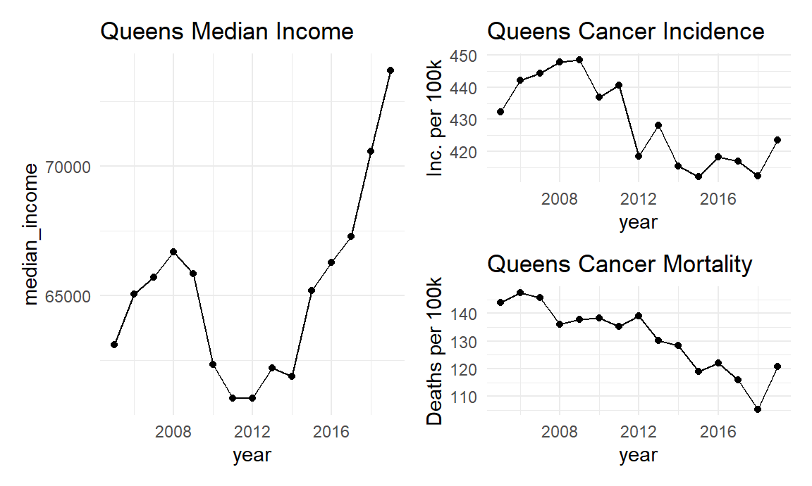
income_data_manhattan_graph =
income_data %>%
filter(location %in% "Manhattan") %>%
ggplot(aes(x = year, y = median_income)) +
geom_point() +
geom_line() +
labs(title = "Manhattan Median Income")
cancer_data_manhattan_graph =
cancer_data_manhattan %>%
ggplot(aes(x = year, y = incidence_per_100k)) + geom_point() + geom_line() +
labs(title = "Manhattan Cancer Incidence", y = "Inc. per 100k")
mortality_cancer_manhattan_graph =
cancer_data_manhattan %>%
ggplot(aes(x = year, y = mortality_per_100k)) + geom_point() + geom_line() +
labs(title = "Manhattan Cancer Mortality", y = "Deaths per 100k")
income_data_manhattan_graph + cancer_data_manhattan_graph /
mortality_cancer_manhattan_graph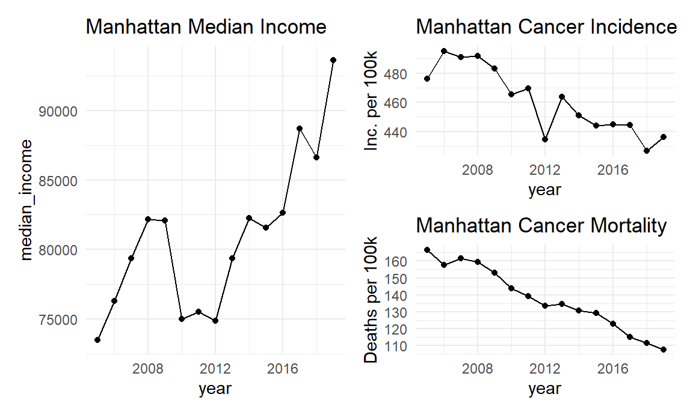
income_data_brooklyn_graph =
income_data %>%
filter(location %in% "Brooklyn") %>%
ggplot(aes(x = year, y = median_income)) +
geom_point() +
geom_line() +
labs(title = "Brooklyn Median Income")
cancer_data_brooklyn_graph =
cancer_data_brooklyn %>%
ggplot(aes(x = year, y = incidence_per_100k)) + geom_point() + geom_line() +
labs(title = "Brooklyn Cancer Incidence", y = "Inc. per 100k")
mortality_cancer_brooklyn_graph =
cancer_data_brooklyn %>%
ggplot(aes(x = year, y = mortality_per_100k)) + geom_point() + geom_line() +
labs(title = "Brooklyn Cancer Mortality", y = "Deaths per 100k")
income_data_brooklyn_graph + cancer_data_brooklyn_graph /
mortality_cancer_brooklyn_graph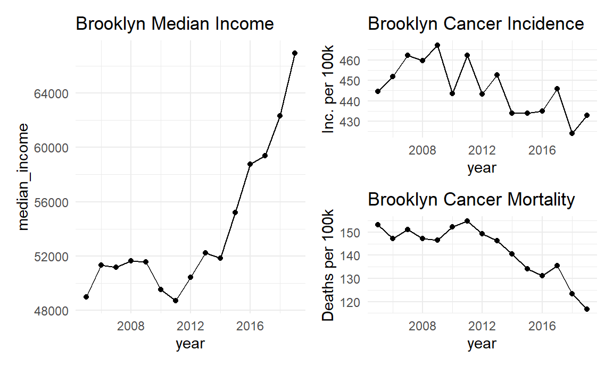
income_data_bronx_graph =
income_data %>%
filter(location %in% "Bronx") %>%
ggplot(aes(x = year, y = median_income)) +
geom_point() +
geom_line() +
labs(title = "Bronx Median Household Income")
cancer_data_bronx_graph =
cancer_data_bronx %>%
ggplot(aes(x = year, y = incidence_per_100k)) + geom_point() + geom_line() +
labs(title = "Bronx Cancer Incidence", y = "Inc. per 100k")
mortality_cancer_bronx_graph =
cancer_data_bronx %>%
ggplot(aes(x = year, y = mortality_per_100k)) + geom_point() + geom_line() +
labs(title = "Bronx Cancer Mortality", y = "Deaths per 100k")
income_data_bronx_graph + cancer_data_bronx_graph /
mortality_cancer_bronx_graph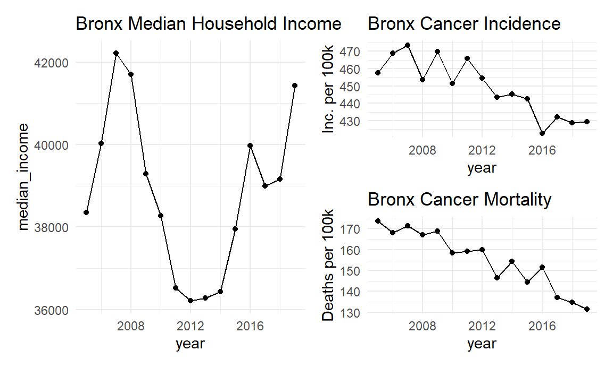
Now we will visualize the median income distribution per borough to compare it to the distribution for cancer incidence
bar_plot_income =
income_data %>%
filter(location %in% c("Manhattan", "Brooklyn", "Queens", "Bronx")) %>%
group_by(location) %>%
summarize(mean_income = mean(median_income, na.rm = TRUE)) %>%
ggplot(aes(x = reorder(location, mean_income), y = mean_income, fill = location)) +
geom_bar(stat = "identity") +
labs(title = "Median Household Income", y = "median_income", x = "location") + theme(legend.position = "none")
cancer_data =
tibble(
year = c("2005", "2006", "2007", "2008", "2009", "2010", "2011", "2012", "2013", "2014", "2015", "2016", "2017", "2018", "2019"),
incidence_bronx = cancer_data_bronx$incidence_per_100k,
incidence_brooklyn = cancer_data_brooklyn$incidence_per_100k,
incidence_manhattan = cancer_data_manhattan$incidence_per_100k,
incidence_queens = cancer_data_queens$incidence_per_100k) %>%
pivot_longer(-year, names_to = "location", names_prefix = "incidence_", values_to = "incidence_rates")
bar_plot_incidence =
cancer_data %>%
group_by(location) %>%
summarize(mean_incidence = mean(incidence_rates)) %>%
ggplot(aes(x = reorder(location, mean_incidence), y = mean_incidence, fill = location)) +
geom_bar(stat = "identity") +
labs(title = "Mean Cancer Incidence Rates", x = "location") + theme(legend.position = "none")
bar_plot_income + bar_plot_incidence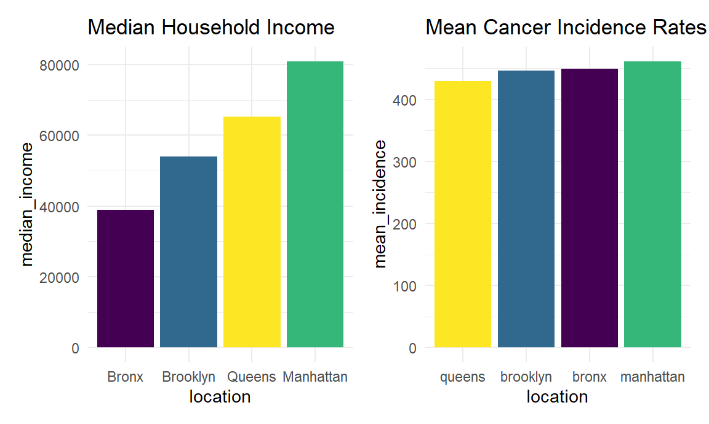
Developing Linear Models for Median Household Income and Cancer Incidence Rates
Now we will fit a linear model for cancer incidence rates using median household income for all households as a predictor
income_data_nyc =
income_data %>%
filter(location %in% "New York City")
nyc_cancer_rates = read_excel("data/nyc_cancer_data.xlsx", sheet = "all NYC", skip = 2) %>%
janitor::clean_names() %>%
select(x1, rate_per_100_000_population_3, rate_per_100_000_population_12) %>%
rename(year = x1, incidence_per_100k = rate_per_100_000_population_3, mortality_per_100k = rate_per_100_000_population_12) %>%
filter(year %in% c("2005", "2006", "2007", "2008", "2009", "2010", "2011", "2012", "2013", "2014", "2015", "2016", "2017", "2018", "2019")) %>%
cbind(income_data_nyc["median_income"])
lm(incidence_per_100k ~ median_income, data = nyc_cancer_rates) %>%
broom::tidy() %>%
select(term, estimate, p.value)## # A tibble: 2 × 3
## term estimate p.value
## <chr> <dbl> <dbl>
## 1 (Intercept) 551. 0.000000405
## 2 median_income -0.00170 0.108ggplot(nyc_cancer_rates, aes(x = median_income, y = incidence_per_100k, color = year)) + geom_point() +
geom_smooth(se = FALSE, method = "lm") +
labs(title = "Cancer Incidence Rate vs Median Income", y = "Incidence per 100k")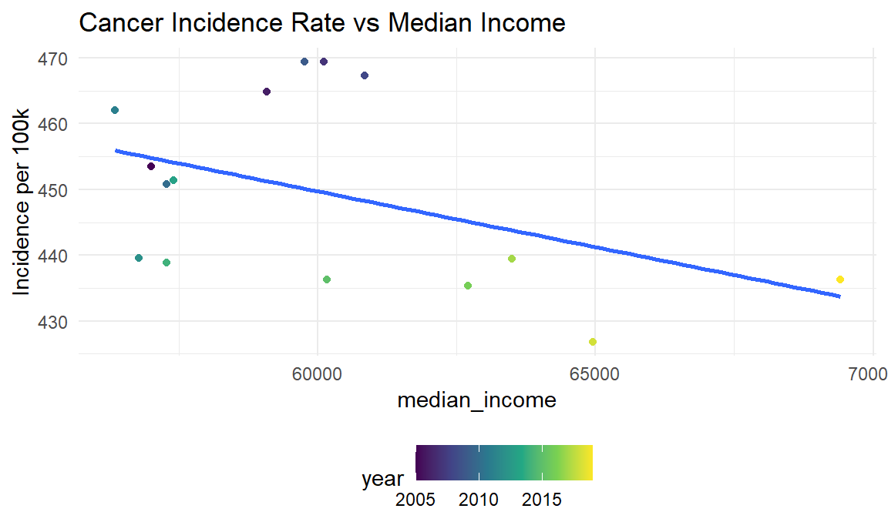
Now we will look at the highest and lowest median household income in each borough in 2017 and compare them to their respective cancer incidence rates from 2015 - 2019 and visualize this in a scatter plot.
income_data %>%
group_by(year, location) %>%
filter(!str_detect(location, "Zip"), year == "2017") %>%
summarize(mean_income = mean(median_income)) %>%
mutate(location = fct_reorder(location, mean_income)) %>%
plot_ly(x = ~location,
y = ~mean_income, type = "scatter", mode = "markers", color = ~location) %>%
layout(showlegend = FALSE, title = "Median Household Income NYC Neighborhoods in 2017", xaxis = list(title = ""), yaxis = list(title = "Median Household Income"))Now we will examine all the neighborhoods within the four boroughs and plot their respective median household income vs cancer incidence rates from 2015 - 2019 to examine any trends.
cancer_data_by_income = read_excel("data/nyc_cancer_data.xlsx", sheet = "income_vs_incidence")
cancer_data_by_income %>%
plot_ly(x = ~median_income,
y = ~incidence_per_100k, type = "scatter", mode = "markers", color = ~location) %>%
layout(title = "Cancer Incidence Rate vs Median Household Income in NYC Neighborhoods", xaxis = list(title = "Median Household Income"), yaxis = list(title = "Cancer Incidence Rate Per 100k"))Looking at this plot we see there does not seem to be a distinct relationship between median household income and cancer incidence rates as neighborhoods with low median household income experience high cancer incidence as well as in neighborhoods with extremely high median income such as Park Slope, still experience high rates of cancer incidence. The same can be said for low median income areas such as Bushwick which still experiences low cancer incidence rates and high median income areas such as Williamsburg experiencing low cancer incidence rates.
Now we will fit a linear model to quantitatively determine any relationship between median household income and cancer incidence rates.
lm(incidence_per_100k ~ median_income, data = cancer_data_by_income) %>%
broom::tidy() %>%
select(term, estimate, p.value)## # A tibble: 2 × 3
## term estimate p.value
## <chr> <dbl> <dbl>
## 1 (Intercept) 427. 4.57e-44
## 2 median_income 0.000207 1.29e- 1ggplot(cancer_data_by_income, aes(x = median_income, y = incidence_per_100k)) + geom_point() +
geom_smooth(se = FALSE, method = "lm") +
labs(title = "Model of Cancer Incidence vs Median Income across NYC Neighborhoods from 2015 - 2019", y = "Cancer Incidence per 100k", x = "Median Income") + theme(
plot.title = element_textbox(hjust = 0.5,
width = unit(0.5, "npc"),
margin = margin(b = 3)),
plot.title.position = "plot"
)
We see that median_income is a not a significant predictor for cancer incidence rates being evidenced by the p-value for the median_income estimate being insignificant at 0.129. The linear regression graph for cancer incidence and median income also does not appear to be correlated as there is not a clear proportional relationship between the two variables.
Conclusion and Limitations
From this analysis, there is not enough evidence to determine that median household income in New York City has an effect on cancer incidence rates. This could be due to a multitude of reasons, the modeling is rudimentary as the only predictor for cancer incidence rates was median household income. It is reasonable to suggest that cancer incidence should have multiple predictors to be accurately modeled as the development of cancer is often a multi-faceted occurrence. Additionally, income may not have any effect on cancer incidence regardless of better modeling techniques or more robust datasets. However, to accurately determine factors that lead to cancer incidence or mortality, a multitude of predictors would need to be implemented and that would make it more likely to determine if income plays a factor in cancer incidence.
There were also many avenues of exploration that were not considered in terms of analyzing the race, ethnicity, sex, and age, among other factors, within the cancer and income data sets. These categories were either unavailable for public use or were not able to be analyzed in the given data sets. These factors play a role in both income levels and cancer rates and should be taken into consideration when performing analysis like this. While this analysis finds that median household income is not a significant predictor for cancer rates, this topic should be explored in more depth before drawing further conclusions.